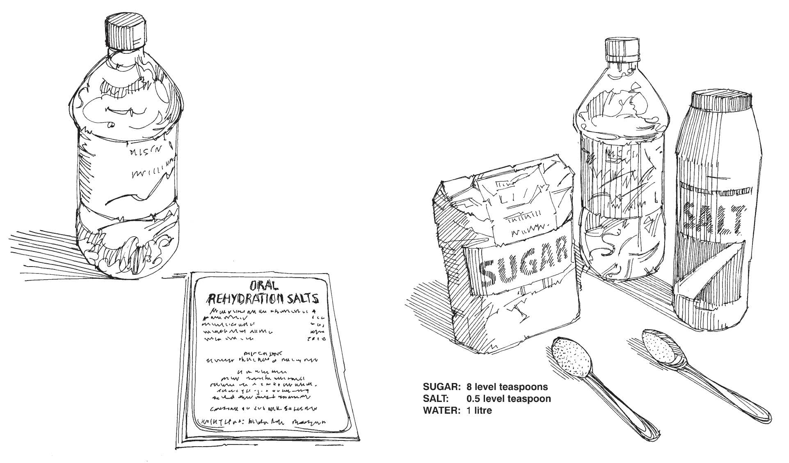

Home-made salt sugar solution: Eight teaspoons of sugar + half a teaspoon of salt. Mix in one litre (or 5 cups) of water. ORS sachet: Mix in 1 litre safe drinking water.
Children with diarrhoea need rehydration, give them ORS!
Cholera can be prevented by:
- Drinking safe water, water that has been boiled at least one minute.
- Keeping water in a clean container with a cover.
- Eating hot and cooked food.
- In times of an epidemic avoid eating seafood, fish and raw food (fruits and vegetables can be contaminated). Do not eat fruit or vegetables that you have not peeled yourself.
- Wash your hands with soap or ashes after using the latrine and before eating.
- Food preparers should wash their hands before touching or preparing food.
- Protect food from flies.